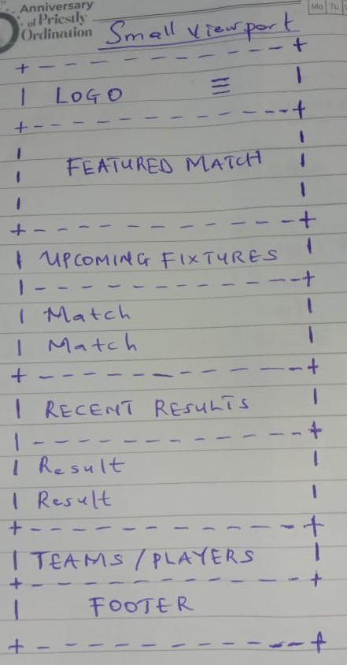
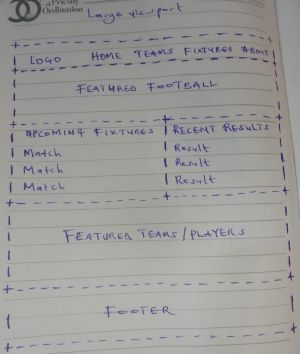

1. Site Name
Nigerian Football Hub
The name "Nigerian Football Hub" was selected because the website will serve as a central source of information about Nigerian football. The word "Hub" communicates the idea of bringing different types of football information together in one place, including teams, players, fixtures, results, and competitions.
2. Site Purpose
Nigerian Football Hub will provide football fans with accessible information about Nigerian football. The website will feature information about Nigerian teams and players, upcoming fixtures, recent results, competitions, and other relevant football information.
The site will use JavaScript and JSON or a remote API to provide dynamic football information. The goal is to create a responsive, accessible, and easy-to-use website for people who want to follow Nigerian football.
3. Scenarios
- Where can I find information about Nigerian football teams and notable players?
- What Nigerian football matches are coming up, and what were the results of recent matches?
- Which Nigerian football competitions and teams are currently being featured?
4. Color Scheme
The color scheme is inspired by the colors commonly associated with Nigeria. Green will be the primary color, while gold will be used as an accent color. White will provide contrast and create clean content areas.
- Green (#006B3F): Header, navigation, section headings, buttons, and major accents.
- Gold (#D4A017): Highlights, borders, important information, links, and secondary accents.
- White (#FFFFFF): Main content areas and text on dark backgrounds.
5. Typography
The website will use two fonts to create a clear distinction between headings and body content.
- Roboto: Used for headings, navigation, buttons, and other prominent interface elements.
- Open Sans: Used for paragraphs, lists, descriptions, and general body content because it is highly readable at different screen sizes.
Roboto Heading Example
Open Sans body-text example showing how general information will appear throughout the website.
6. Wireframe
The home page will use a responsive layout that changes appropriately between small and large screens.
Small Viewport
The small-screen layout will contain a compact header and navigation, followed by a featured football section and vertically stacked content cards for news, fixtures, results, and teams.
HAND-DRAWN WIREFRAME REQUIRED

Large Viewport
The large-screen layout will provide a wider navigation area, a prominent featured section, and multiple content areas arranged in columns or a grid. The layout will make better use of the available screen width while maintaining clear visual hierarchy.
HAND-DRAWN WIREFRAME REQUIRED

Important: The wireframes above are placeholders. The actual wireframes and are created as black-and-white hand-drawn sketches, as required by the course instructions.